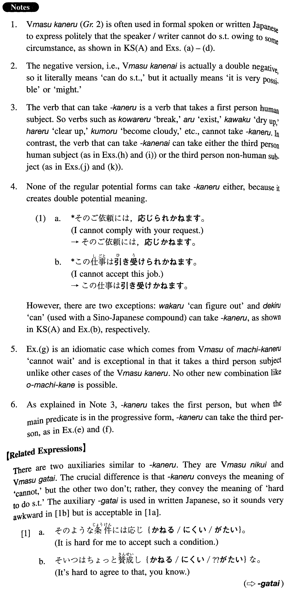

←
DoJG
→
かねる
(I. 96)
Example sentences
(ksa).
そのことは私には分かり
かねます
から、部長にお聞きになって下さい。
I am not in a position to figure out that matter, so please ask the departmental chief.
(ksb).
あの男はどんな馬鹿なことでもやり
かねない
。
He might (literally: can) do any stupid thing.
(a).
来週はロンドンへ出張しますので、誠に申し訳ございませんが、名古屋での会議には出席でき
かねます
。
Next week I am making a business trip to London, so I cannot attend the meeting in Nagoya.
(b).
これだけの書類を一月では処理いたし
かねます
が。
I cannot handle this many documents in a month.
(c).
大変遺憾に存じますが、ご依頼には応じ
かねます
。
It is a great regret, but we cannot comply with your request.
(d).
こんな高価な贈り物、頂き
かねます
。
I cannot accept such an expensive gift.
(e).
彼は私の気持ちを量り
かねている
ようだ。
He appears to find it hard to understand my feelings.
(f).
非常に言いにくいことなので、さすがの部長も切り出し
かねている
。
It is such a delicate matter, so even the departmental chief finds it hard to break the ice.
(g).
みどりさん、ご主人がお待ち
かねよ
。
Midori, your husband is waiting for you with impatience (literally: cannot wait).
(h).
あいつはとんでもないことを言い
かねない
から、注意した方がいいよ。
He might say outrageous things, so watch out.
(i).
あの男はちょっとしたことで暴力を振るい
かねない
。
That man might use violence at the slightest provocation.
(j).
この事件は内閣総辞職にも発展し
かねない
。
It is possible for this incident to develop into resignation of the entire cabinet.
(k).
暴動すら起こり
かねない
ような緊迫した情況だった。
It was such a tense situation that even a riot could have taken place.
Formation
Vます
かねる
/
かねない
飲み
かねる
Someone cannot drink something
飲み
かねない
It is possible for someone to drink something/someone might drink something
